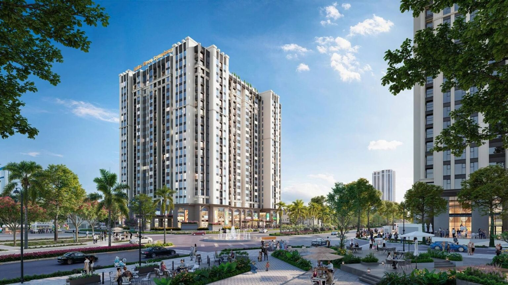
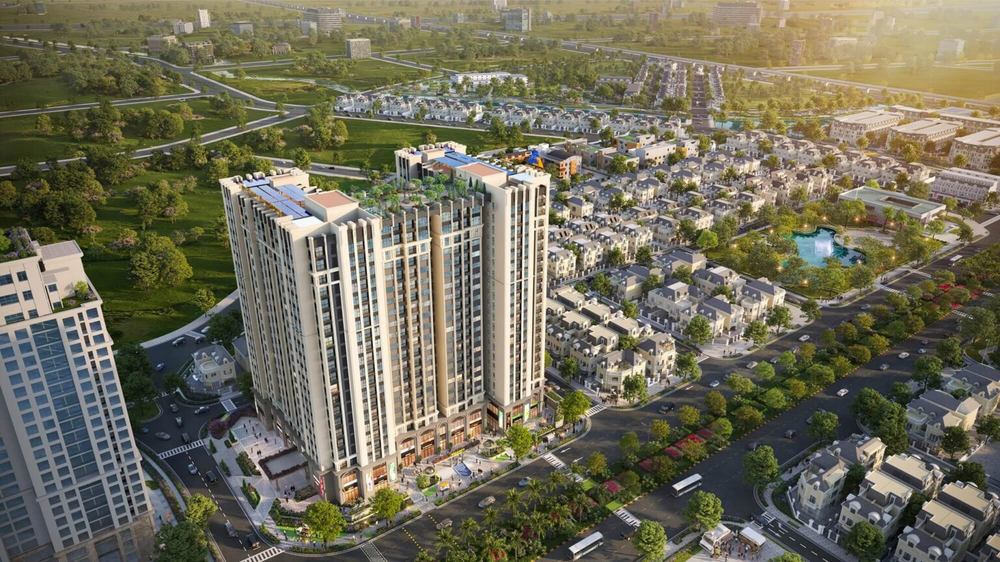
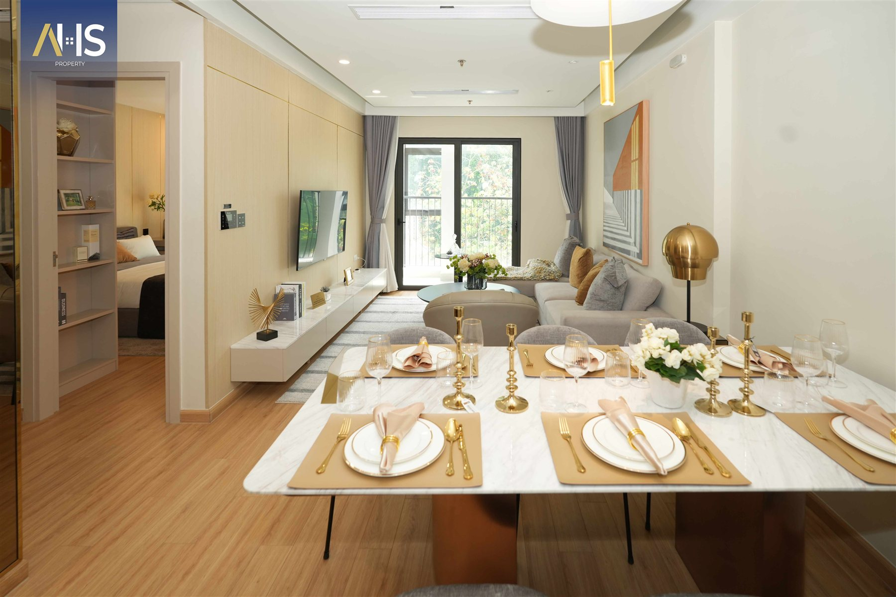
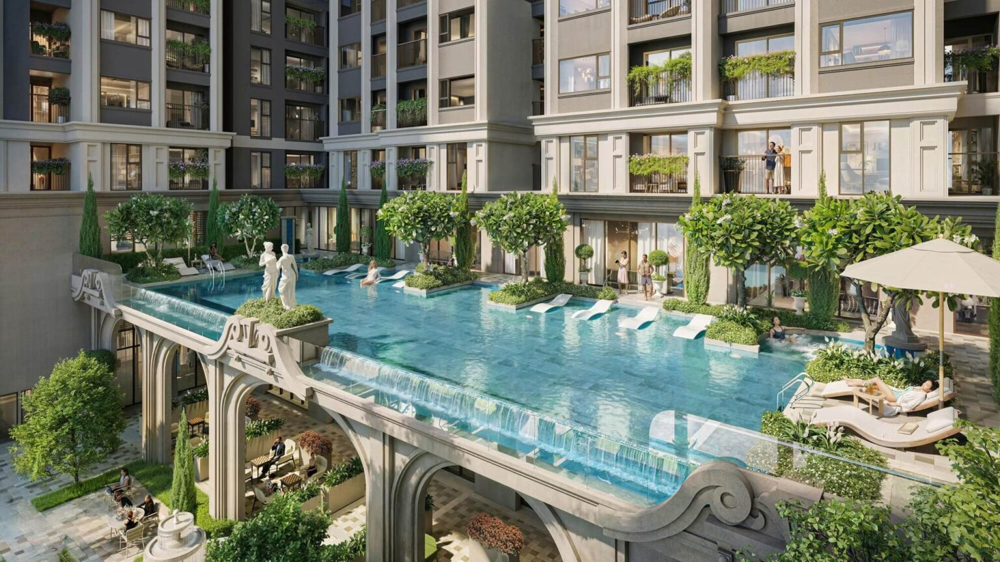

ĐẠI LỘ ÁNH TRĂNG · ANLAC GREEN SYMPHONY · HÀ NỘI
Moonlight 2.
An cư giữa miền xanh.
Một không gian riêng, một nhịp sống kết nối.
Khám phá căn hộ 2–3 phòng ngủ trong lòng đô thị xanh phía Tây Hà Nội.
MOONLIGHT 2 — MỘT NHỊP SỐNG MỚIPhối cảnh minh họa · Nguồn: moonlightanlac.com
⌄494 căn
QUY MÔ CĂN HỘ
21 tầng
TẦNG NỔI THEO GIỚI THIỆU
2–3 PN
ĐA DẠNG KHÔNG GIAN SỐNG
An Lạc
ĐƠN VỊ ĐẦU TƯ PHÁT TRIỂN
TỔNG QUAN DỰ ÁN
Tổ ấm trên cao.
Chất sống giữa thiên nhiên.
Moonlight 2 là dự án căn hộ của Tập đoàn An Lạc trong khu đô thị Anlac Green Symphony. Không gian căn hộ kết nối với cảnh quan và tiện ích toàn khu, dành cho những gia đình đang tìm nơi ở phía Tây Hà Nội.


Quy mô 494 căn, 21 tầng theo thông tin Tập đoàn An Lạc. Tham khảo ngày 04/11/2026. Hình ảnh gồm phối cảnh và căn hộ mẫu.
VỊ TRÍ & KẾT NỐI
Nhịp phố bên nhà.
Miền xanh bên cửa.
Moonlight 2 được giới thiệu tại mặt Đại lộ Ánh Trăng, trong khu đô thị Anlac Green Symphony, Hà Nội. Khu vực kết nối với Mỹ Đình và Nam Từ Liêm qua các trục đường phía Tây.
- 01
Đại lộ Ánh Trăng
Trục đường nội khu nơi dự án tọa lạc.
- 02
Đường 70 & Vành đai 3.5
Các trục kết nối được website nguồn giới thiệu.
- 03
Mỹ Đình & Nam Từ Liêm
Các khu vực làm việc, học tập và dịch vụ lân cận.
Sơ đồ tham khảo, không xác nhận tiến độ hạ tầng. Kiểm tra tuyến đường thực tế trước khi di chuyển. Nguồn vị trí ↗
MẶT BẰNG DỰ ÁN
Nhìn rõ công năng.
Chọn đúng nhu cầu.
Tham khảo bố trí hai tháp A và B, vị trí lõi thang và các nhóm căn hộ trên mặt bằng tầng điển hình do website nguồn giới thiệu.
2 phòng ngủ 2 phòng ngủ + 1 3 phòng ngủ
Bản vẽ tham khảo từ moonlightanlac.com; không thay thế hồ sơ thiết kế hoặc phụ lục hợp đồng.
LỰA CHỌN CĂN HỘ
Vừa vặn hôm nay.
Rộng mở cho ngày mai.
Khởi đầu bằng nhu cầu gia đình. Chọn loại hình để tìm hiểu công năng và chuẩn bị những câu hỏi cho buổi tư vấn.
TƯ LIỆU AHS PROPERTY · CĂN HỘ MẪU
GỌN GÀNG & KẾT NỐI
Căn hộ 2 phòng ngủ
Gợi ý cho gia đình trẻ muốn cân bằng không gian sinh hoạt chung với hai phòng ngủ riêng.
- Phòng ngủ
- 2 phòng ngủ
- Điểm cần xem
- Phòng khách, bếp & logia
- Diện tích, hướng & giá
- Xác nhận theo mã căn
Ảnh mẫu minh họa cách bố trí nội thất. Xem mặt bằng và tiêu chuẩn bàn giao cụ thể trước khi lựa chọn.
Bạn cần so sánh nhiều phương án?Chia sẻ nhu cầu của gia đình ↗
TIỆN ÍCH & TRẢI NGHIỆM
Hơn một nơi ở.
Một không gian để tận hưởng.
Theo website giới thiệu, Moonlight 2 kết hợp tiện ích tại khối đế, tầng mái với cảnh quan và dịch vụ của khu đô thị Anlac Green Symphony.
Thư giãn & vận động
Bể bơi, gym và yoga được giới thiệu trong hệ tiện ích của dự án.
Những khoảng xanh trên cao
Vườn mái, không gian dạo bộ và khu vực giao lưu cộng đồng theo giới thiệu.
Nhịp sống gia đình
Khu vui chơi, không gian thương mại và tiện ích đô thị bổ trợ sinh hoạt hằng ngày.
Danh mục, thời điểm vận hành, điều kiện sử dụng và phí dịch vụ cần được xác nhận khi tư vấn.
THƯ VIỆN HÌNH ẢNH
Khám phá Moonlight 2
qua từng góc nhìn.
Phối cảnh từ website tham khảo và ảnh nội thất từ tư liệu được cung cấp. Chọn ảnh để xem lớn.
TƯ LIỆU CĂN HỘ MẪU
Gần hơn với
không gian sống của bạn.
Từ phòng khách sum vầy đến góc riêng của từng thành viên. Khám phá bộ ảnh nội thất được cung cấp, giữ nguyên dấu nhận diện AHS Property.
Ảnh tư liệu do người dùng cung cấp, có dấu nhận diện AHS Property. Hình ảnh thể hiện không gian căn hộ mẫu; không mặc định là toàn bộ nội thất bàn giao của mọi căn Moonlight 2.
TRẢI NGHIỆM TƯƠNG TÁC 360°
Bước vào tổ ấm.
Theo cách của riêng bạn.
Khám phá khu đô thị và không gian căn hộ mẫu trong tour An Lạc Green Symphony do AHS Property đăng trên Kuula.
CÂU HỎI THƯỜNG GẶP
Hiểu rõ hơn.
Lựa chọn vững vàng hơn.
Những thông tin nên đối chiếu trước khi chọn một căn hộ.
Moonlight 2 nằm ở đâu?
Dự án được giới thiệu trên Đại lộ Ánh Trăng trong khu đô thị Anlac Green Symphony, phía Tây Hà Nội. Xem sơ đồ và Google Maps tại phần Vị trí để tham khảo tuyến đường.
Có những loại hình căn hộ nào?
Nguồn giới thiệu các nhóm 2PN, 2PN+1 và 3PN. Diện tích, công năng và vị trí thay đổi theo mã căn; nên đối chiếu bản vẽ chi tiết trước khi quyết định.
Giá bán và chính sách thanh toán hiện tại thế nào?
Trang không chốt mức giá hoặc ưu đãi chưa được xác nhận. Hãy yêu cầu bảng giá có ngày cập nhật, các khoản thuế/phí và điều kiện áp dụng cho căn hộ quan tâm.
Hình ảnh có phải nội thất bàn giao thực tế?
Trang dùng phối cảnh và ảnh căn hộ mẫu. Hình ảnh không thay thế phụ lục vật liệu hoặc cam kết bàn giao. Hãy yêu cầu danh mục bàn giao và hồ sơ sản phẩm để đối chiếu.
Làm sao để nhận tư vấn hoặc đề nghị lịch xem?
Điền nhu cầu tại phần liên hệ để soạn email. Bạn tự kiểm tra và gửi trong ứng dụng email của mình. Lịch tư vấn hoặc tham quan cần được bên tiếp nhận phản hồi xác nhận.
BẮT ĐẦU TỪ NHU CẦU CỦA BẠN
Căn hộ phù hợp,
cho cách sống của bạn.
Chia sẻ loại căn hộ, ngân sách và điều gia đình quan tâm. Soạn yêu cầu để trao đổi với địa chỉ liên hệ An Lạc đang sử dụng trên trang.
EMAIL THEO WEBSITE AN LẠCinfo@anlac.vn ↗
Đối chiếu thông tin liên hệ tại nguồn ↗